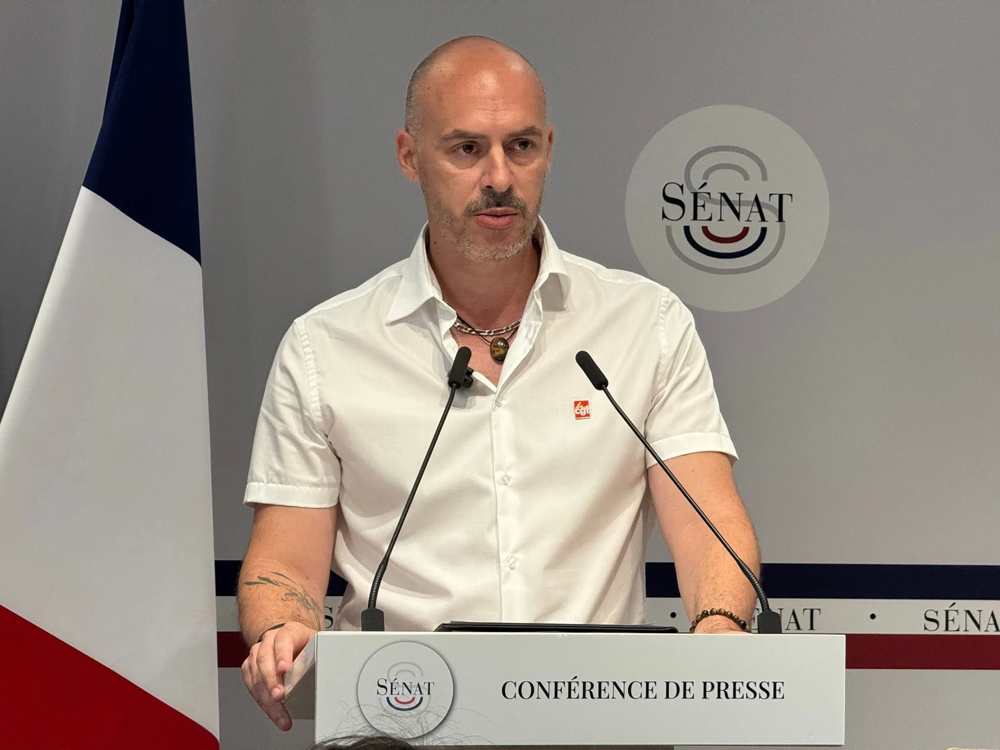
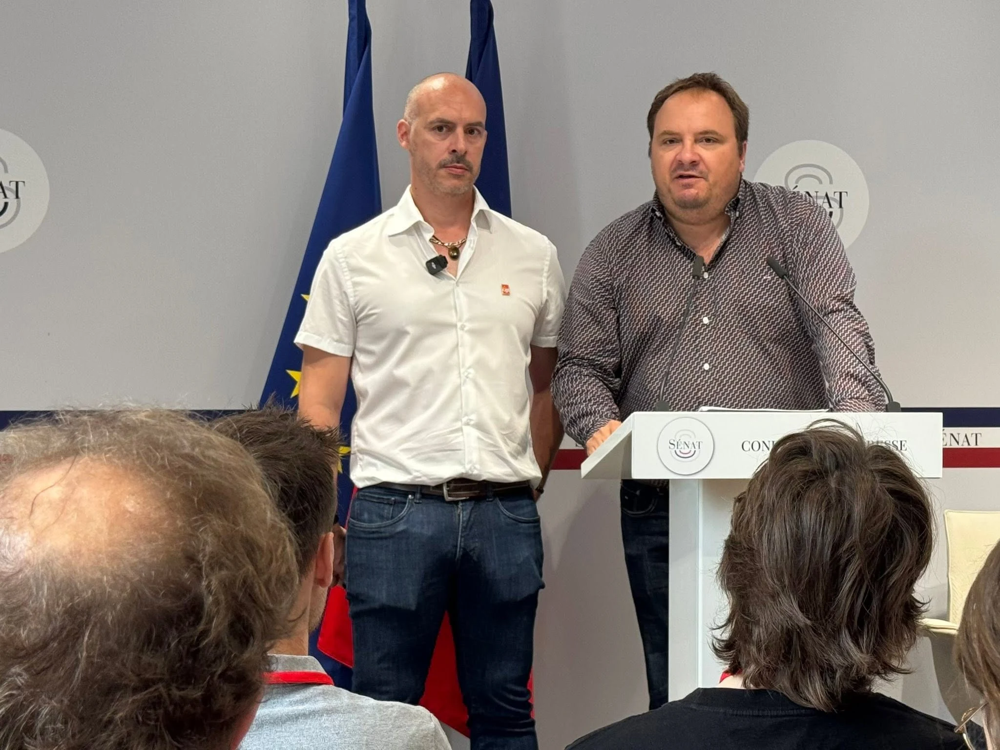

Actualité parlementaire
Gaz et électricité. Fabien Gay conteste la hausse de la TVA sur les abonnements
Date de mise à jour indiquée par Facebook · 16 juillet 2025
Repères éditoriaux
Fabien Gay présente la réponse du groupe communiste du Sénat à la hausse du taux de TVA sur les abonnements au gaz et à l’électricité annoncée pour le 1er août 2025.
Texte de la publication · Fabien Gay
Le gouvernement a pris la décision de passer la TVA sur l’abonnement à 20% sur l’électricité et le gaz à partir du 1er août.
Le groupe Sénateurs Communistes Républicains Citoyens et Écologistes dépose une proposition de loi, issue d’un travail commun avec la FNME-CGT, pour repasser la TVA à 5,5%.
Nous invitons le ministre Marc Ferracci à agir rapidement par décret pour revenir sur cette décision


Sources
Fabien Gay · publication relayée par le PCF 79 · bibliothèque Facebook · AR-0002-FB-01068
À lire aussi · Gaz et électricité. Le PCF dénonce la hausse de la TVA sur les abonnements